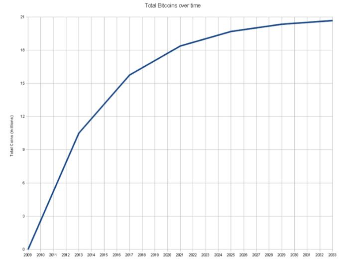
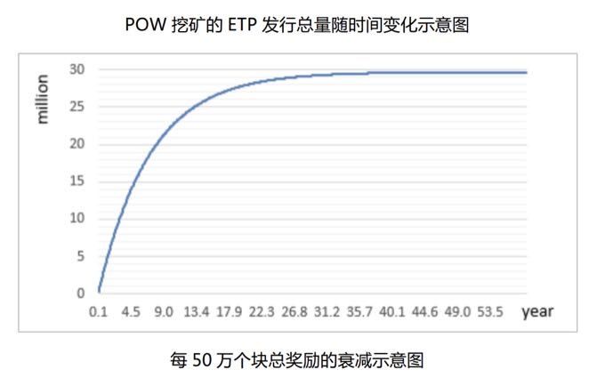

2018-03-26 陈浩
很高兴在我的区块链专栏里和你相识，作为专栏的第一篇文章，我先来和你聊聊“区块链是什么”，以及它的发展过程。
自中本聪第一次发布了比特币，至今已经有 9 个年头了，那么算起来区块链也应该有 9 年的历史了吧？其实不是，“区块链”这个概念恰恰是这些年才有的，如果非要追溯，可能在 2014 年左右，才真正有了“区块链”的概念。
我早期写文章喜欢给区块链下定义，但是读者反响并不如意，所以今天我想“反其道而行之”，先讲一个笼统模糊的对象，再像一层层剥洋葱一样，慢慢地给你讲解区块链的来龙去脉。
首先，什么是区块链行业呢？区块链是一个崭新的行业，与社交、电影、游戏一样，具有自己独特的内涵和发展过程。
这个行业是通过比特币形成的。我们可以把比特币比作一棵树，这棵树在生长过程中不可避免地会开枝散叶，慢慢长大，而这个生长过程其实就是代码 Fork，进行再修改发布运行的过程。
比特币之后有了莱特币，莱特币之后又有了点点币，点点币之后又有了上百种币，后来的这些币仅仅在原有的比特币核心代码上做了技术上或非技术上的修改，从而形成了独有的币种。所以我们在早些时候，也将比特币之外的所有币种统称为“山寨币”。
当然，如果只有一棵树，也就不会称作一个“行业”了。一些大神，比如以太坊的创始人 V 神（Vitalik），再比如比特股、Steem 和 EOS 的创始人丹（ Dan ）等觉得比特币这棵树不够自己发挥的，于是在继承了比特币的“火之意志”之后，相继在比特币旁栽下了属于自己的“树”。
渐渐地，树变树林，几乎是以指数级增长的过程，树林又变成了森林，错综复杂，最终形成了一个崭新的行业，这个行业我们称作“区块链行业”。
我在一开始说区块链具有自己的独特内涵，那么到底是什么内涵让这么多人“趋之若鹜”呢？
前者为后者提供了极佳的赚钱土壤，后者为前者注入了赖以生存的资金。听起来好像“沆瀣一气”，其实并没有，这也是区块链行业通常所说的链圈和币圈。
前者组成了“链圈”，后者组成了“币圈”，以前这两个圈子“井水不犯河水”，现在却有融合的趋势，为什么？
那么，“链圈”加“币圈”也可以是我们所说的区块链行业。
我再深入介绍一点，刚刚提到了“去中心化”，它更像是表达极客信仰的一面“旗帜”，我个人更喜欢称之为“导火索”。
它把金融领域聪明的投资者与厉害的技术人才拧在一起，点燃了无数起“回归互联网平等、自由、开放”的大讨论，任何人都可以从中构思挖掘自己熟悉领域的“区块链应用”，整个过程在技术上看就是上文提到的“开枝散叶”，这个过程你也可以看成是区块链的发展过程。
至此，你可能已经对区块链行业有了一个模糊的认知。那么，到底什么是区块链呢？
简单来说，区块链首先是一个分布式网络。如果你不懂“分布式”也没关系。
我举个例子，假设你和朋友异地开黑打《王者荣耀》，这时候“异地开黑”就可以看成是一个小型的分布式网络。 朋友语音喊你开团战上高地，那么其实这就是达成一次共识的过程，你参与了团战，就是你同意共识的过程。 区块链也是一样，它并没有超出我们的认知框架。让所有的独立节点想要达成共识去做同一件事情，是区块链在技术上首先要解决的问题，这就是我们常说的共识过程，也是“去中心化”这个概念的直接来源。
那么假如有了这样一个分布式网络，我们可以选择不同领域做产品，就像传统技术上有了迅雷、电驴等等产品一样。
区块链与之最大的不同是整个系统本身具有自己的 Token。Token 在国内有的翻译成“通证”，有的翻译成“代币”，其实最简单的理解就是“虚拟资产凭证”，它可以是我们的股权，也可以是票据，也可以是游戏积分，凡是需要资产记账的地方都可以用 Token 来做。
还是回头看上面那个例子。如果你参与了团战，你的朋友就要支付你 1 元，请问这个系统怎么做？注意，我这里说的不是银行卡转账，我就是指在游戏里面，你所在的这个分布式网络中，在你参加团战之后，对方通过这个分布式网络直接支付 1 元给你。
很多人就会说：“直接做到 App 里面呗”，可是你要知道，我并没有说支付“1 元人民币”啊，也有可能是 1 游戏积分，这个游戏积分未必是王者荣耀发行的，你有没有想过这个积分是你的朋友发行的？
你肯定会说，那我要这个积分有什么用呢？好，假设你的朋友是个超级富豪，他说你陪我玩游戏，但我不想支付你法币，我用我自己发的游戏积分给你，你看我老爸在国外开游戏积分交易所的，我的游戏积分在上面交易，你每次帮我开团，我就给你积分，你拿去自己交易换成其他资产，美元啊什么都可以。
想象一下，你的土豪朋友每次语音说“谢谢你帮我开团成功”，你就拿到 1 游戏积分，而这 1 游戏积分和腾讯没半毛钱关系，却又让这个语音与这 1 游戏积分同步生效，区块链其实就是在解决类似的事情。这里的积分可以理解为具有流动性的虚拟资产，但流动性又没有虚拟货币好，它不属于虚拟货币。
说了这么多，现在总结一下区块链是什么：
至于再深入的区块链内容，后续文章听我慢慢道来。
今天我和你聊了下区块链及其行业的发展过程，形象化地描述了区块链是什么。
相信你对区块链行业已经有了一个基本的了解，但文章篇幅有限，希望你能够进一步发掘区块链相关的历史，甚至有趣的故事，比如说 1 万比特币购买披萨事件、真假中本聪事件、以太坊 The DAO 事件分别对应到区块链哪些发展阶段呢？ 感谢你的收听，我们下期再见。
推荐阅读材料：
（除了《精通比特币》可以从网络获得，其他都是实体书籍。除此之外，GitHub 本身就是一个丰富的资料库，比特币和以太坊的开发者文档也可以作为技术进阶。）
白皮书是一个区块链项目的官方概要描述性文档。
问：刚刚接触区块链，从一些零星的资料里给我的感觉，挖矿挣比特币，感觉就是在浪费能源来挣钱，没有做出一些对人类或者社会有意义或者有贡献的事情，比如木匠做出一把椅子，别人可以做，比如用计算机做一些大量的计算，结果可以被参考利用……刚刚接触，可能问了一些幼稚的问题，希望大神们给解惑一下！
答：改进了交易效率呀，以前只能跨境汇款两三天，现在一个小时就能到。不是只有实物才叫有贡献，资金流和信息流的效率提升也属于有意义的事情。挖矿能源浪费是有这个问题，反过来看所有银行安保系统的生产和维护也需要各种资源支持的，换算成能源可能半斤八两，个人看法哈。
2018-03-28 陈浩
上一次，我们聊到了区块链的概念及整个行业的发展过程，今天我想稍微深入一下，尽可能通俗地介绍一下：区块链到底是如何运行的？
这一篇文章我将以比特币区块链为例来进行讲解，理由有两个：
由于区块链发展到目前阶段，各个技术方向都有长足的发展，那么为了方便你理解，我在这里介绍最简单、最容易理解的比特币区块链； 由于大部分区块链都是以比特币区块链为基础进行扩充的，所以首先了解比特币区块链有助于其他项目区块链的后续学习。
首先，我们借鉴了一个区块链描述中的经典情景来模拟中心化记账。
假设有一个有百户居民的村子，其中有一位德高望重的村长，村长有一个儿子。村民们都把钱存到村长家，村长负责记账。比如，张三用 1000 买了李四家的牛，村长就把张三名下的存款减去 1000，李四家加上 1000。听起来是不是很像银行的操作？
对，我们就是先从中心化的银行记账开始聊起。村民都相信村长，才愿意把钱存到村长家，他们相信村长不会作恶。
可惜好景不长，老村长由于操劳过度，驾鹤西去了。新上任的村长儿子铁蛋很是聪明，但也有个毛病，就是粗心大意。他不但经常算错账，一次还被人偷改了账单。
不过，幸好村民自己都有记账，但是由于铁蛋每次错账后都要和别人核对半天，导致村民对新村长的记账能力十分不满。
时间就这么过着，然而最可怕的事情还是发生了，铁蛋的老婆竟然私下篡改账本，给铁蛋七大姑八大姨的余额全部偷偷加了好多，终于有一天事情暴露，村民们气冲冲地跑到铁蛋家里讨说法，于是一片混乱。
这时候有个叫中本聪的人站了出来，他说他设计了一套系统，可以不依赖任何人记账，于是，众人开始将目光集中到他的身上。
中本聪说他的系统稍微麻烦一点，需要干三件事儿。
每家每户都派发一只信鸽。这就是 P2P 网络，是一个点对点的分布式网络，如果不好理解，你先不用理会，我会在后面讲到。
每家每户都发一个特殊的印章和一个扫描器。这个扫描器有两个功效，一是识别他人的交易是否真实有效，二是识别这个交易是不是自己账号的，同时识别并解锁未花费的余额。这就是非对称加密。
每家每户可以参与记账，不过不再记余额，而是记交易本身的内容。这就是区块链中的交易，这个“交易”对应的英文单词是“Transaction”，这是个专有名词，专指一笔账，不同于金融交易的 Trade。
这三条总体来说其实是干一件事情，就是：
每家每户都记账，账簿上不再记载每户村民的余额，而只记载每一笔 Transaction，即记载每一笔交易的付款人、收款人和付款金额。
那么问题就来了：如果每户都记账，肯定每户的账都不统一啊，你记你的，我记我的，最后不全乱了么？
这个时候需要大家统一账本，保证大家的账本都是一致的。因为记录的交易是全村所有人有序产生的，所以这就需要有一个广播机制。这个广播机制，我先卖个关子，后面再讲。
中本聪说，其实很简单，我们现在先把全村所有人的资产都加起来。还真巧了，刚好 100 万。
中本聪接着说：“只要账簿的初始状态确定，并且每一笔交易可靠并按照物理时间自然记录，并且只加不改不删，这样，当前每户持有多少资产是可以推算出来的。”
中本聪说我现在把我的印章给你们看，这个印章很特殊，盖的章有两块标记，第一块是一个可以识别的标记，比如我往纸上一敲，可识别的标记是 1MsTg2。
这就是你们的代号，由于我们账本是公开的，使用真实姓名会很危险，所以你们记账的交易单上收款人、付款人都填这个码，不用写姓名。你的扫描器和你的印章生成的代号是关联的，有且仅有持有对应扫描器的人才能花费金额，这一步即为“解开交易”。
刚刚说印章有两块，这第二块内容配合这个扫描器才能看，肉眼看则都是乱码，扫描器一扫就知道第二块内容是否有效，这一步也就是“交易验证”。
并且所有交易大家都能接收，都能看到，但却解不开印章乱码部分的内容，仅仅收款方才能解开，因为你的扫描器和你印章生成的代号是关联的，有且仅有持有对应扫描器的人才能解开交易。
以上就是区块链中“公开记账”的过程。“公开记账”就是全网所有人都可以随时查看一套账本，然后按照规则透明公开地进行记账。
创世区块是我们生成全村公开账本的第一笔交易的第一个信封，好比一篇文章总得有个开头一样。
于是乎，中本聪说我先生成第一个 Transaction，这个交易单的付款人为空，收款人是村长，付款金额是 100 万，因为是创世区块，产出多少个是可以随意规定的，由于我们上面统计了全村的账目情况，所以我就写了 100 万，待会儿付款给村长以后，我们可以按照原来的账本给大家发送对应的金额过去。
好了，我们有了第一笔交易，第一个信封也已经做好了。现在让村长把信封传给张三，张三复印一份，然后传给李四，李四继续传下去，一传十，十传百，直到传给全村人，这个步骤也就是“同步区块”，也就是全网都拿到这个信封，以及信封里面的 Transaction。
由于上一节我们的创世区块把 100 万交给了村长，那么我们假设张三在村长那里的存款余额是 10 万，这时候村长要根据原来的旧账本，把这 10 万发送给张三，然后把旧账本上的账划掉。下面我们讨论一下如何构造这笔交易。
中本聪开始教村长写交易单，把 100 万分成两部分，第一部分 10 万，收款人是张三；第二部分是 90 万，收款人是自己；这样一个 Transaction 就做成啦。
前面我们说了，不能直接写名字，要写代号，这个代号也就是你的钱包地址，我们需要把收款人写名字的地方，让收款人拿出自己印章，把代号读出来，然后告诉村长即可。
100 万 10 万，张三
90 万，自己村长写好 Transaction 以后，还需要拿出自己的印章，在 Transaction 上盖章，这个盖章的过程也就相当于区块链中的签名。这个章，全村人都可以拿扫描器扫一下验证是否有效，即验证付款人的章是否有效。
100 万 10 万，张三的印章（1s25vR）
90 万，村长的印章（13gYip）就这样，村长一共写了 10 份 Transaction，分别代表了发送给不同人的交易，张三一笔 10 万，李四一笔 1 万，等等。
现在我们有了 Transaction，但是还需要东西把 Transaction 装起来，我们用一个特殊的信封把 Transaction 装起来，这个信封就是区块链中的“区块”，这个封装过程就是“打包交易”。
为什么要封装起来呢？是为了让打包交易的人能够在信封上署名，表示这次打包是由某某某打包的，其次全村的交易可能非常多，需要装配标号，方便大家查询。
我们看到上述的 Transaction 虽然已经生成，但是有个问题，就是没有规定谁有权利把 Transaction 封装到信封里。
我们在开篇的故事中看到了中心化操作肯定是不行的，假设在全村人中，这时候如何筛选出这些打包的人呢？
中本聪这时候说了，由于我们村的人口增长，100 万未来可能不够，我们暂定 150 万，那多余的 50 万，我们就当奖励给这些装信封的人了，当然不能一次性给，谁装一次信封就领 3 个币。
这时候大家伙儿来劲了呀，只要装信封就能够领钱了，我们在这里把符合条件的人称作“矿工”。
但是中本聪又说了，要获得这个装信封的权利，是有条件的。我给大家出一个难题，谁先解出这个难题的答案，谁就有权利把 Transaction 装到一个信封中，并且要在此信封上盖上自己的章。
这个难题是这样的，它有两大特性，第一是容易验证，第二是计算过程非常复杂。
例如，有种棋牌类游戏叫作“24 点”，玩法就是给出任意 4 个整数，通过整数运算得到 24，比如现在给出 2、9、1、5 四个数，答案是（5-2）*（9-1）= 24。当然，本处仅是举例，“24 点”游戏的答案空间非常小，是远远不够生成信封的。
答案非常好验证，但是计算过程是一个尝试的过程，需要耗费大量的精力。而在真实的比特币中，采用的是寻找符合条件的目标哈希，这也就是比特币矿工所做的事情。
好了，这时候大家开始计算给出的难题，刚好李四第一个计算出来，那么这次装信封的操作就由李四完成，李四把 10 份 Transaction 装到信封中，也就是打包 Transaction，并且要在信封背面写上一个信封的摘要信息。
比如上一个信封中的第一个交易是什么、信封封面长什么样，最后要在信封上盖上章，也就是“签名”，矿工签名的目的是为了领币，也就是 Coinbase 交易。
以上过程在区块链领域称作“打包 Transaction”，也就是大名鼎鼎的“挖矿”。
来说说上文提到的广播交易，广播是为了让全村人知道当前时刻你产生了一笔 Transaction，或者是你装好了一个信封。
广播的内容分两种，一种是广播 Transaction，一种是广播信封。第一种广播是意味着还有未被打包的 Transaction，而第二种广播信封则意味着这个 Transaction 已经被某个矿工确认。
收到了广播的通知后，大家先验证信封上难题的答案是否正确，这样便可以验证出信封是否被伪造，接着验里面的每笔交易，最后还要验证信封背面的内容，即上一个信封的摘要是否正确。因为上一个信封大家都已经确认，所以这样可以极大地规避作弊的可能。如果觉得没问题，就可以存入本地数据库中了。
至此，全村人的记账问题就差不多解决啦。
今天我用非常浅显的例子与你聊了比特币区块链，其中包括区块链中公开记账、创建创世区块、交易、打包 Transaction、广播交易的几个步骤。
因为篇幅所限，在表述上可能会有不精确的部分，但是大体意思是相通的，相信读完文本，你已经对区块链的原理有了一个大致的了解。
你也可以针对每个模块进行扩展，比方更换矿工的计算方法，可以推导出 PoS 共识机制，不知道你还能想到哪些扩展呢？欢迎留言探讨。
感谢你的收听，我们下次再见。
本文叙述模式参考链接： http://www.8btc.com/bitcoin-story?_t=1520884553
2018-03-30 陈浩
我在第 2 讲“区块链到底是怎么运行的”一文中，提到了“打包 Transaction”和“广播交易”这两个概念，因为概述的原因，当时只带着你走了一遍过程。其实，以上谈到的两个内容正是区块链最核心的技术内容之一：共识机制。
区块链发展至今，已经形成了各种不同类型的共识机制，在今天的文章中，我们就展开聊一聊区块链共识机制到底是什么，以及区块链的共识过程到底是怎样的。
拜占庭将军问题其实是虚构出来的一个故事，是为了方便通俗地介绍分布式系统所面临的难题。这里我仅作一个简短的说明，你可以在中文社区找到更丰富的通俗解释材料。
为了避免重复，我们换一种表述形式，还是以上一次的村子为例，假设随着村子和人口的发展，大村子演变成了十一个小村子并分散在各地，各地的通信只能靠信鸽进行。
大家约定了每年都会举办一个相亲大会，至于谁能举办，每年轮流从两个备选村子，A 村和 B 村中选择一个，然后大家投票，票数多者可以赢得举办权。
由于地图很大，任何一个村子的投票都无法靠一只信鸽传输到每个村子，必须靠一个中继村子代为传输，这也就意味着有中继村子可以读到其他村子的投票信息。
那么，如何防止下面两个问题的出现呢？
投票者的“精分”，这里所谓的“精分”是指某个村子的投票行为不一致，发送给第一个村子的投票消息为“投票给 A”，而发送给第二个村子的投票消息却为“投票给 B”。
中继村子作弊，即篡改上一村的投票消息。
上面讨论的问题我们可以认为是简化的 “拜占庭将军问题”（完整的拜占庭将军问题还有将军 - 副官模型，如果感兴趣的话，你可以自行阅读）。
我们回头再看区块链。区块链本质上也是分布式系统的一种，其共识机制也是为了上述问题而提出的解决方案。
共识机制是区块链是核心的组成要素之一，它决定了区块链的业务吞吐量、交易速度、不可篡改性、准入门槛等等，是最为关键的技术要素之一。
要理解区块链共识机制，首先就需要理解区块链共识机制到底解决了什么问题。
共识机制主要解决了两个问题：
上一次我们构造了一个中心化记账的场景，在这个场景下，记账问题其实可以简化为大家信任中心记账者即可。
然而在分布式记账的场景下，问题更为复杂。首先，大家面临的最大问题是谁有权利记账，其次是如何避免记账者作弊。毕竟，谁都有权利记账，也就意味着谁都有可能作弊。
以上两部分共同构成了区块链共识机制。
另外补充一点，在比特币社区，“共识”（consensus）这个词已经跳出了技术的范畴。通常人们在表述一个比特币上的问题时，共识的内涵还包括比特币的使用者、开发者、矿工来达成社区共识的部分，所以“共识”这个词在区块链领域还有些“民主”的味道，不单单是技术领域的“共识”。
PoW （Proof of Work）工作量证明可以解决上述的两个问题，
在上一篇文章中，其实我们已经悄悄讲解了一点 PoW 共识机制，你还记得上文提到的“24 点”那个游戏吗？“24 点”其实是尽可能随机地选取系统中任意的节点来规避作弊者，这个方案的实践其实就是 PoW 共识机制。
产生记账者的随机性其实来自于谁最先计算出 24 点的答案，这个问题可以简化成谁拥有的计算资源更多，谁就拥有整个系统的最大概率的记账权。一旦这个概率超过一半以上，那么这个系统就有一定的中心化风险。
如何理解上面一段话呢？
举个例子，李四家发明了一种算盘，可以快速计算 24 点答案，比起其他人掰手指头，李四家总是有很大的概率拿下记账权，换句话说，也就是李四和全村其他所有人竞争，相当于算盘对全村其他人手指头的竞争。
如果算盘足够强大，就能有一半的概率获得记账权，那么李四个人的诚实性，就成为了系统的唯一破绽。
比如李四在第一次记账时篡改部分交易，第二次还是他记账，还继续篡改交易，那么两次修改如果自洽的话，是可以形成假账的，这就是所谓的中心化风险。
所以在 PoW 这种机制中，计算资源（又称算力）是决定记账权的唯一因素。与之对应的，便是计算难度。
计算难度又称作挖矿难度，计算难度是区块链为了控制产生答案的速度，比如平均 10 分钟就有一个答案产生，平均 2 分钟一个答案产生。
在上述场景中，因为李四有了算盘，强大的计算资源突然加入以后，肯定会让整个系统的产生答案的速度变快很多，作为系统本身会自适应，将难度提升，降低答案产生的速度。
上面介绍了这么多，其实是想引出另外一个问题，PoW 到底是如何避免作弊者的呢？答案就是计算资源（算力）。
设想，如果一个作弊者想篡改信封里面的交易，首先得获得记账权，也就是装信封的权利。
而影响记账权的唯一因素只有计算资源（算力）的大小，如果想篡改交易，只能投入大量的计算资源与整个系统中其他所有人进行对抗，这是十分困难的，尤其在整个系统有一定基础计算资源（算力）的情况下。
PoW 中一个有趣的设计是激励机制，在 PoW 共识机制下，我们假设所有参与者都是理性的，理性的意思就是单纯逐利，不考虑家庭、爱好等其他因素。有了理性的前提，PoW 共识机制会给每个诚实的记账者予以奖励，这个设计可以抗击作弊收益的问题。
怎么进行抗击的呢？整个过程是这样的，理性的人如果作弊、篡改账本肯定需要投入成本，也就是计算资源，收益是篡改账本获得的收益减去投入成本，这个收益往往小于诚实计算所获得的收益。所以，作弊者在作弊过程中投入的计算资源过大，反而得不偿失。
上面给出了一个结论，我们说作弊的收益往往小于诚实计算的收益。这一点其实对应到区块链领域有个著名的问题：双花攻击（double-spending） 。
双花攻击是指一个代币被花费了两次，这在任意的区块链系统中是不被允许的。如果避免了双花问题，基本就能避免上述作弊中收益过大的问题，因为攻击者首先要窃取到你的私钥，同时又能控制了你的计算资源（算力）。
为了方便分析，我们回到上一篇中广播交易的那一节。那一节中我介绍了广播的内容分为两种，第一种是 Transaction，第二种是区块，也就是信封。
第一种又被称为未确认的 Transaction，第二种信封中所有的交易被称作已确认的 Transaction。
所有记账节点都会遵循以下两条规则：
规则一：一个代币如果已经被花费，那么会被标记成已花费，如果再次接收到这个代币被花费的请求，那么记账节点会拒绝打包这笔交易；
规则二：如果同时接收到两个信封，这两个信封中装的两笔交易出现了一个代币被花费了两次的情况，这种情况也就是我们所说的分叉（Fork），那么选择挖矿难度比较大的那个信封。
规则一避免了未确认的交易出现双花，规则二基本避免已经确认的交易中（信封中）的双花问题。
假设作弊者的计算资源（算力）占整个系统的 30%，那么连续两次获得记账权的概率是 9%，看起来作弊的可能性还是挺高的，如果是连续 6 次获得记账权呢？概率直降到万分之七。
在比特币中，这个 6 也就是 6 次确认，表示连续 6 个块过去了，如果我的交易没有被双花的话，那么它被篡改的可能性将越来越小，最后变得几乎不可能被篡改。这也是区块链不可被篡改说法的由来。
试想，如果任何作弊者花了大量的成本获取了系统 30% 的计算资源（算力），最后只有万分之七的概率获得篡改的可能性，比起作弊，还不如诚实记账的收益高。
好了，今天带你了解了区块链的共识机制，也顺便浅谈了拜占庭将军问题，介绍了区块链的入门共识机制 PoW，它其实也是目前区块链领域使用最广泛，应用最成熟的共识机制。
最后，还涉及了一部分 PoW 工作量证明的补充：解决双花攻击。由于篇幅所限，我们将在技术篇详细讲解 PoW、PoS、DPoS 等共识机制。
那么，亲爱的读者，你觉得 PoW 共识机制和其他分布式一致性算法有什么不同吗？欢迎给我留言，一起讨论。
感谢你的收听，我们下期再见。
阿痕： PoW算法的特色是结合了经济学上理性人的假说，发明了激励机制，让做好人的奖励大于做坏人的获利。但我觉得比特币每4年递减的特点可能会导致这个天平被打破，比特币奖励越来越少，而比特币总量越来越多，是否意味着某一天可能作恶的收益要大于做好人的收益呢？
作者回复： 1. 可能的，不过这个周期非常长，临界点可能在这个世纪末，但由于不确定因素非常多，多因素综合，例如到时比特币100万美金一个，即使低收益只要可以覆盖成本即可，而且作弊是概率的，只有期望值。所以足够的时间会发现新的算法来修正PoW，或切换其他共识 2. 比特币的总量是恒定的。
2018-04-02 陈浩
我在前面的三篇文章中分别介绍了区块链是什么、区块链的运行原理、并且简述了区块链的共识机制，在这一篇文章中，我将为你讲解一下区块链的应用价值。
由于区块链本身发展处于早期阶段，成熟的应用并不是很多，我的主要目的是拓宽你的思路，抛砖引玉，希望你能够从中获得应用灵感，为区块链挖掘出更多有市场的应用，但需要提醒你的是，本文提到的内容不构成任何投资建议。
数字货币是区块链的第一大应用类型，市场上目前可统计的数字货币币种有 1500 种以上，2017 年其迅速增长的市值让人措手不及。
那么说，到底如何理解数字货币这个概念呢？其实你可以简单理解为一种无主权、社区自治的货币形式，关于这部分的详细介绍我们留到下一篇。
在“区块链到底是怎么运行的”一文中，我们构建了一个中心化记账的模型，这个模型可以对应到如今央行 - 商业银行的模式上；而数字货币的运行则通常是靠社区自治的，所谓社区自治，是指用户、维护者、开发者三种角色共同决定数字货币的发展，也就对应了上一篇文章中，我们所讲到的“共识”。
我们先来看看数字货币，通常具有下面几个特点。
总量透明公开。数字货币的发行是在项目创建之初，是白皮书事先就规定好了的，白皮书通常是一个区块链项目公开发布的一种阐述性文档，其中简述了项目的宗旨和愿景以及设计蓝图。在白皮书中，这个项目总共发行多少数字货币，投资者、用户、矿工能够获得多少也都是事先分配好的。数字货币的总量也分为两种，一种是总量设上限的，另外一种是不设上限的。
数字货币缓慢释放。数字货币在分配好不同角色的额度之后，往往不是一下子就能发行完毕的，通常在矿工的那部分是需要靠“挖”才能出来的，这也就是前面我们所说的挖矿，挖矿为数字货币的缓慢释放提供了一种方法。
代码执行规则。由于我们在白皮书中规定好了总量和数字货币释放的机制，白皮书的内容会成为整个社区的基础共识，所以在项目的主网上线之后，数字货币的释放不再是人为控制，而是在代码层面体现，代码将负责控制数字货币的释放，这里去除了人为操作的因素。
基本上，所有公有区块链项目都会具备以上特性，可见数字货币和区块链的关系十分紧密。另外，在区块链领域，一个项目的开始运营，就伴随着一个新的数字货币的产生，这个数字货币会成为这个项目的基础代币，也有可能会派生出其他货币。
与区块链的其他应用类型不同的是，数字货币这种资产天然具有较好的流动性，所以在所有权上更为敏感。
比方说，如果“你的信用卡被盗了”和“你的微博账号被盗了”，正常人都会紧张第一种情况。所以说，区块链在数字货币上的应用，其“去中心化”“不可篡改”的特性相较于其他，就显得更具有划时代的意义。
我们在上一节聊了数字货币，这其实可以推而广之对应到数字资产。
怎么理解呢？如果区块链可以做数字货币，那么同理，它也可以应用到其他任何资产，尤其是虚拟资产。
虚拟资产一般包括有金融资产、游戏代币、数字版权、域名、用户流量等。由于虚拟资产不需要与实体资产进行挂钩，所以在对应到区块链上更为方便。它具体的应用形式在供应链金融、票据市场都有所体现。
我们还是继续举例子。区块链圈子内有个非常有名的加拿大白胡子大叔，他基本上是逢会必现。
他要做的应用简而言之叫做“良心区块链”，不是指区块链项目的良心，是指他希望用区块链技术让所有人可以进行自我管理，自我管理的方式是对“良心”进行评价和奖励。人的良心都可以区块链化，还有什么不能尝试呢？
他的项目是这样的，比如今天我给自己设定了一个跑 10 公里的目标，如果我完成了，那么我会在系统上获得代币，如果没有完成，则有相应的惩罚机制。大叔的项目还与联合国 17 条可持续发展目标进行了关联，他的目的也很单纯，就是希望通过自己的行为让世界更好一点。
你看，在区块链上，连“良心”都可以数字化，还有什么不能数字化呢？
我们再举个例子。前些年比较火热的一个少年团体叫 TF-Boys，里面有三位成员，很多粉丝其实是与偶像割裂的，并没有一种模式叫做让粉丝与偶像共同增值。
比如我们可以让 TF-Boys 每位成员都可以发行属于自己的区块链积分，并与粉丝一起共同持有。在未来，根据偶像成长和走红的程度，偶像可以与粉丝一起分享收益。
所以说，除了数字货币，数字资产也是区块链的一个应用方向。数字资产的应用形式与资产证券化（ABS）十分类似，感兴趣的读者可以自行研究一番。
那么区块链目前有哪些比较成熟的应用呢？其实我们有时候想得太远了，反而忽略了脚下。首先来说，任何的区块链创始项目如果要活下去，就要先解决钱的问题，也就是融资问题。
我们在前面说到，任何的区块链项目基本都会产生一个基础代币，那么什么样的融资模式能让投资者和项目方都满意呢？
其实，这个融资模式本身就是一个很成熟的应用。——答案是去年被七部委明令禁止的 ICO(Initial Coin Offering)。
我们在这里，简单从技术的角度介绍一下 ICO，ICO 的中文名是首次代币发行，又称为区块链众筹，这是一种新型的融资模式，投资者可以用手中的比特币或其他代币投到一些区块链创始项目。
一个区块链项目发起之后，如果选择发起 ICO，相比传统融资渠道，项目方会在很短的时间内融到资，且白皮书中规定好的代币将一次性地投放到投资者手里，并在短时间内上线数字资产交易平台。
数字资产交易平台也具有高流动性，这种高流动性为早期投资者提供了退出条件，这样投资者的投资周期大大缩短，并且可以快速抽身。
例如，马先生持有 1 个比特币，现在参加了某名为 ABC 的区块链项目 ICO，ICO 兑换比例是 1：10000，也就是说马先生投资 1 个比特币给项目方，将会拿到 1 万个 ABC 代币。
如果 ABC 代币会在一个月内上线交易平台，假设 ABC 的价格波动超过 50%，那么马先生的 1 万的 ABC 代币可以交易成 1.5 个比特币，马先生纯赚 0.5 个比特币，并且他可以抽身这个项目，再次参加新一轮的 ICO。
ICO 技术虽然为所有区块链项目提供了周期短、效率高的融资模式，但在同时，ICO 也成了传销和内幕交易的重灾区。
以上举例说明了区块链在虚拟资产下的应用模式，而另外一个高产虚拟资产的领域——游戏领域，也是区块链同化的对象。
不过，目前还没有特别成熟的案例，比较有名的是 2017 年走红的以太坊“养猫”游戏，但我并不认为这意味着区块链真正踏入了游戏圈，这仅仅只是它的小试牛刀。
试想，你在游戏里的道具，如果可以在其他任何游戏进行使用，感觉是不是很棒。虽然目前还没有现象级的游戏被区块链同化的例子，不过你也可以发散思维，构想一些新的区块链游戏模式。
当然除了虚拟资产，实体资产也可以用区块链进行应用，但是目前遇到的难题基本都是实体资产如何与链上区块链的数据进行一一映射。
这涉及了数据公证等等环节，实施起来比中心化应用困难很多，比较典型的例子是区块链与供应链结合，解决信息流、资金流、物流，“三流”合一的问题。
除了实体资产和虚拟资产，区块链最简单直接的应用还有公证公示领域，不过这里仅仅用到了区块链“不可篡改”的特性。
通过本篇文章，我向你介绍了区块链的一些应用方向。包括了区块链在数字货币以及数字资产上的运用。
在这篇文章中，我并没有大夸特夸区块链，相反，我认为区块链的应用范围目前多被局限在金融领域。所以，我想告诉亲爱的你，理性看待区块链的应用可以让我们更好地去应用区块链。那么还有哪些行业，可以使用区块链进行数字化呢？
感谢你的收听，我们下次再见。
2018-04-04 陈浩
从历史进程来看，货币的形态主要经历了几次变化。从早期社会如兽皮、牲畜、陶器的物物交换，到各种贝壳类的货币，再到后面的铜币，乃至后来人们选择了黄金和白银作为流通货币。
随着消费需求不断增加，人们发现可以通过发行纸币来替代贵金属，于是，我们就一起进入了信用货币的阶段。后来，技术的发展促进了电子货币的产生。现如今区块链技术的大热，它的第一个应用就是数字货币。
数字货币通常是国内的叫法，在国外，它一般称作“加密货币”。数字货币听起来比加密货币更抽象一点，“数字”旨在表现它不同于传统货币的行为，即它可以通过“数字”表现更多自定义的行为。
那么，如何用一句话来解释什么是“数字货币”（加密货币）呢？我们可以这样形容：数字货币通常是基于区块链技术、在全球范围内公开发行的、并且没有任何国家政府背书的虚拟货币，这种虚拟货币具有“去信任”、“点对点”、“公开记账”、“不可篡改”等特征。
既然聊到了虚拟货币，我们正好可以把电子货币、虚拟货币、数字货币（加密货币）的概念捋一捋。
近年来，现金使用的频度降低，很多人首选使用电子支付。电子货币和数字货币一样都是无形的，但是电子货币其实就是将法币电子化，例如第三方支付平台，银行卡电子现金，银行大小额支付系统等等。它只是以电子的方式记录了原来法币的账目，从本质上来说，它们仍然需要在多个中心化系统中进行稽核、对账，“电子”本身并没有成为金融的一部分。
在 2017 年区块链投机狂热的时候，“虚拟货币”这个词基本是用来指区块链项目的基础代币，这样的叫法大多源自于圈外投机者。其实不然，虚拟货币所指代的概念远比电子货币以及数字货币都要更加广泛。
虚拟货币通常是由非金融机构发行的非实体货币，大致分为三类。
第一类比如游戏代币，通常不与实体经济发生联系。例如在《王者荣耀》这款游戏中，如果你想要得到新的道具，就必须有足够的游戏代币（钻石和点券），这种虚拟货币还有个特征就是封闭性，即只能在这款游戏中使用。
第二类是积分类，它可以与实体经济发生联系，比如常旅客积分，超市礼品卡，这种虚拟货币也有个特征叫做单向性，即只能流入，而不能流出。
第三类自然就是我们主要讲的数字货币（加密货币）了，比特币便是其中典型。 综合来看，与法币的“有形”对应，虚拟货币更多地体现在它的“虚拟无形”上，随着互联网的发展，虚拟货币本身也在逐渐发展，从而诞生了更多新的模式与机遇。
数字货币一般是指公有区块链平台底下的基础代币，该代币被记录在由密码学保证的一套公开账本上，与传统货币不同的是，由于去中心化以及可编程等特性，此种货币具有可自定义行为的属性。
在比特币中，我们可以定义多重签名交易来实现真正意义上的“由多人共同掌管的机构型账户”。
比如，在元界上，用户可以自定义交易的行为，例如在转账时可以指定代币的一个锁定期，并且指定解锁条件；而在比特股中，这种行为更被强化为具有衍生品特性的货币，这在传统货币领域是不可想象的。
与数字货币对应的，还有数字资产这个概念，不过这是另外一个话题了，后续我会有详细的讲解。
正因为数字货币的诸多新特性，所以金融机构和互联网公司纷纷加入研究行列，越来越多的人想要研究数字货币，这里，我想带你对比数字货币和传统货币的不同特性，以便你可以更直观地了解数字货币和传统货币的不同。
传统货币在支付过程中，除了现金，其他任何方式基本都或多或少地保留了交易者的信息，无论你是个人还是机构，运营商都可以使用这些交易数据来跟踪你的活动。
而在数字货币领域，这件事就无足轻重了，目前大部分数字货币具有假匿名性，即化名性，所以并不会被查到你自己的私人资料。
同时，由于区块链上未提供 KYC（Know Your Customer）功能，也就是充分了解你的客户，对账户持有人的强化审查，所以让监管者很难追踪到交易者的信息，也让数字货币成为了黑市交易的温床。
这样的缺点主要是因为不少公链代币设计中没有加入身份的概念，不过这在我这样的技术人的角度来看，只是算是一个需求，而不是数字货币本身存在的缺陷。
数字货币的发行主体通常是项目发起方，并且会在白皮书中定义好数字货币的发行过程；在主网上线以后，所有的代币会根据一开始设计好的发行过程缓慢释放到市场，这个过程其实就是大家喜闻乐见的“挖矿”过程。
所以在主网上线以后，即使作为项目发起方，也几乎很难有权利再次修改发行机制，所有人只能以提案的形式递交到社区进行讨论，讨论的最终结果决定了能否被再次修改。
这个过程其实与民主选举的过程很相似，而在信用货币领域，发行主体通常是央行，央行可以通过货币的政策进行宏观调控，从某种意义上来说，央行模式是中心化的极致体现，而数字货币则属于点对点机制的体现。
由于数字货币的交易过程需要网络中每个节点的认可，且每一笔交易都被记录在区块链上，所以历史交易记录永远不用担心丢失或者被篡改。
只要数字货币基础的加密算法不被攻破，并且保护好私钥，你的资产便是真正意义上、只属于你自己的资产。
传统货币的交易过程最终是落到银行的，所以银行系统的安全性决定了传统货币在使用过程中的安全阈值，这也表示你的资产是托管在银行的。
传统货币是有主权的，通常只在主权国家范围内流通；数字货币目前却没有这样的限制，只要你能连上互联网，你就可以随时随地发送交易到任意地域。
总结来看，数字货币目前也有很大风险，如今还没有比较完整规范的法律法规来约束数字货币的使用者，所以使用数字货币会有较高的法律与投资的风险。
而且普通人已经接受了信用货币这种设定，目前对数字货币的接受度在各国并不一样，例如在中国大陆接受度低，在日本接受度高。
数字货币在 2016 年开始加速，2017 年借助 ICO 呈井喷式发展，数字货币市场形成了一个大泡沫，这与 2000 年初的互联网泡沫十分相似，但是泡沫并不可怕，它只是一个热门新生事物的必然过程。
我们需要在这个泡沫中找到规律，那么首先就要了解数字货币的发行过程。我们可以以比特币为例子来聊聊它的发行过程。
比特币的发行过程是通过挖矿维持的，是依靠矿工挖矿产生比特币。相当于矿工自己就是一个小型的印钞机。
矿工每挖出一个区块，也就是在第二篇文章中提到的“打包一个信封”，会产生一个 Coinbase 交易，这个 Coinbase 交易相当于凭空产生了币，矿工可以从 Coinbase 获得比特币，作为维护系统的奖励。
Coinbase 的产出是每 4 年衰减一半的，第一个 4 年是挖出每个块 50 个比特币，第二个 4 年的周期就是挖出每块产出 25 个，目前比特币处于第三个 4 年，Coinbase 产出 12.5 个比特币的阶段。
以上逻辑是比特币白皮书和比特币代码规定好的，所有比特币的参与者可以进行验证。并且根据以上逻辑，我们可以画出如下的发行曲线。
我们可以看到，比特币的发行过程每隔四年发生一次改变，发行速率逐渐降低，随着时间推移趋于平缓。
同理，我们在其他数字货币项目就可以看到类似曲线，不过它们未必与比特币的发行曲线一样，有可能是离散式的，有可能是线性的，这取决于白皮书中规定的发行过程。
例如熵币 ETP 的发行过程也是一个衰减过程，不过 ETP 的衰减系数是 0.95，所以相对比特币可以说更光滑了，它随着时间收敛到挖矿总量 3000 万，那么这个曲线看起来是这样的。
所以数字货币的发行过程可以认为是一个区块链项目的核心利益分配的过程，也是一个社区激励的过程，如何把有限的代币派发给愿意为项目付出的社区人，是考量一个区块链项目运营成熟度的重要指标。
今天，我简单介绍了数字货币，相信你对于数字货币已经有了一个初步的了解，数字货币作为区块链的第一个应用，已经广泛地被人们所熟知，并且大有燎原之势。
除了社区型的非盈利性开源数字货币项目，央行也在推动基于区块链交易平台，同时，由央行发行的法定数字货币也已经在这种平台上开始试运行。
可见数字货币的发展已经是未来的趋势，顺应着这种趋势，作为技术人的我们可以从中看到更大、更复杂的挑战。
这里给你留一个思考题，你可以在数字货币中看见怎样的挑战呢，你可以在下面留言，我们一起交流，感谢你的收听，我们下次再见。